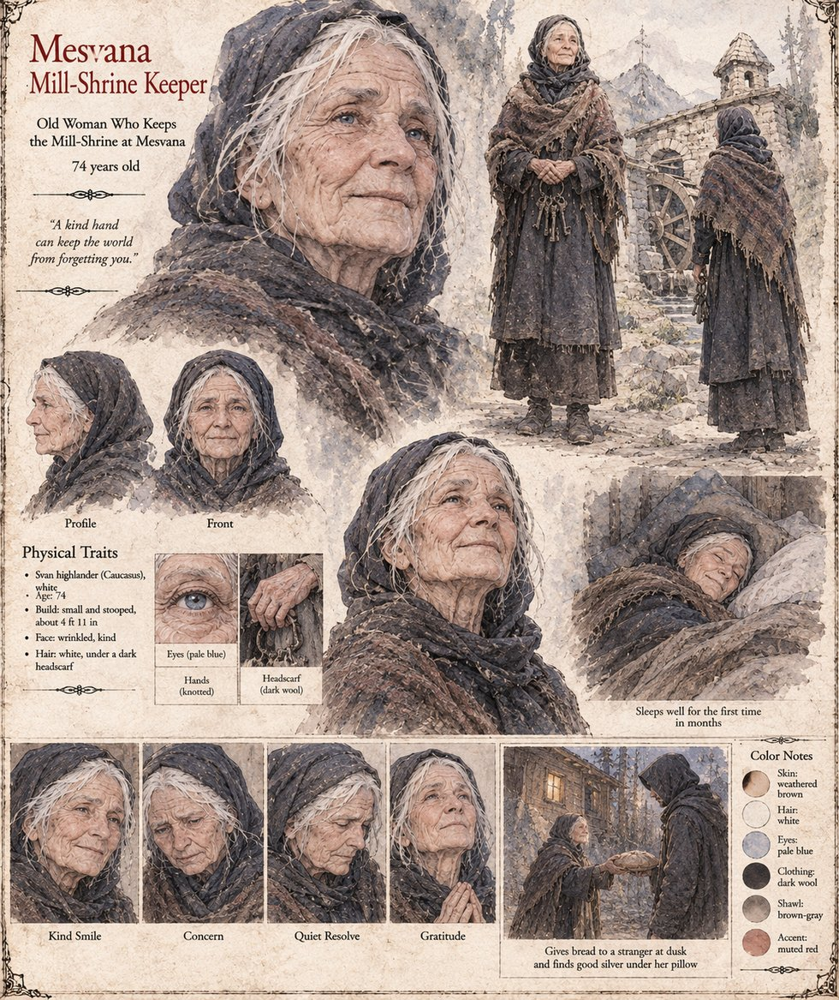

Mesvana Mill-Shrine Keeper
Old woman who keeps the mill-shrine at Mesvana · the Mother’s host to a stranger at dusk · unnamed · 74 on her sheet
Mesvana is a valley of river-mills and one of the Mother’s four, and its arrow is kept in a glass case in the mill-shrine. In the month of Lorren, when snow lies on the high road and the host of Mesvana has not yet come home from the Hall, a small man in a goatherd’s coat knocks at dusk and asks the old woman who keeps the shrine for bread, in the voice of one who has done this very thing on other days to other households. By the Hearth Law he is the Mother’s guest until the next first frost. What he carries is the house’s to guard, and he carries nothing. In the morning the case is empty, and the old woman, who had slept well for the first time in months, was found to have been paid, under her pillow, in good silver, for the bread.
The manuscript gives her no name and no age, and says nothing of whether she knew. The arrow is the one the king draws for the fog on the pass at Dzaleti; the man at her door is Ioseb.
The manuscript gives the shrine, the bread and the silver. The sheet’s age of 74, small, stooped build of about 4 ft 11 in, wrinkled, kind face, white hair under a dark wool headscarf, pale blue eyes, knotted hands holding a ring of keys, dark wool dress and brown-grey shawl are its own, as are its panels Kind Smile, Concern, Quiet Resolve and Gratitude and its scenes Sleeps well for the first time in months and Gives bread to a stranger at dusk and finds good silver under her pillow. The line it prints for her, A kind hand can keep the world from forgetting you., is not in the manuscript.
“was found to have been paid, under her pillow, in good silver, for the bread”